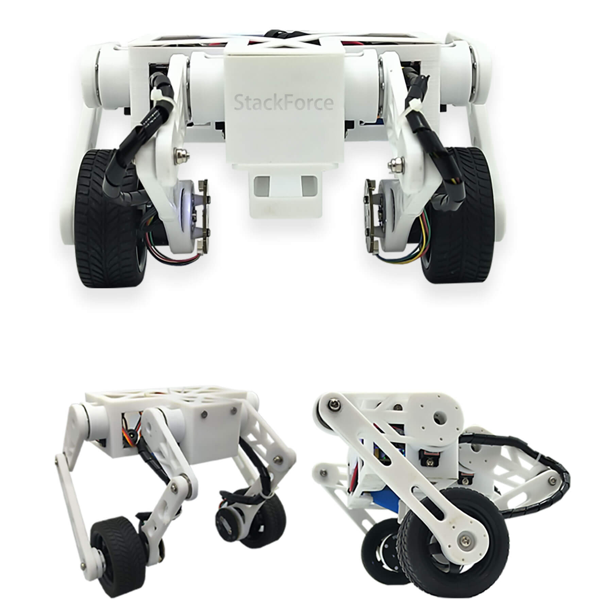
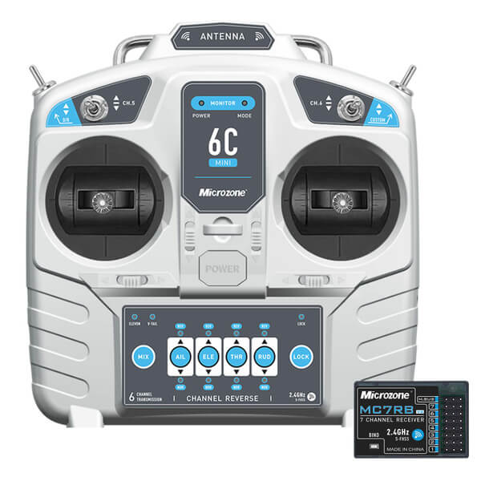
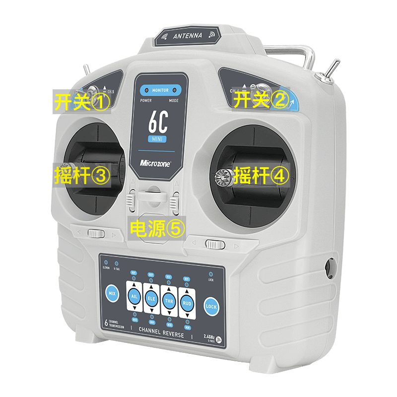
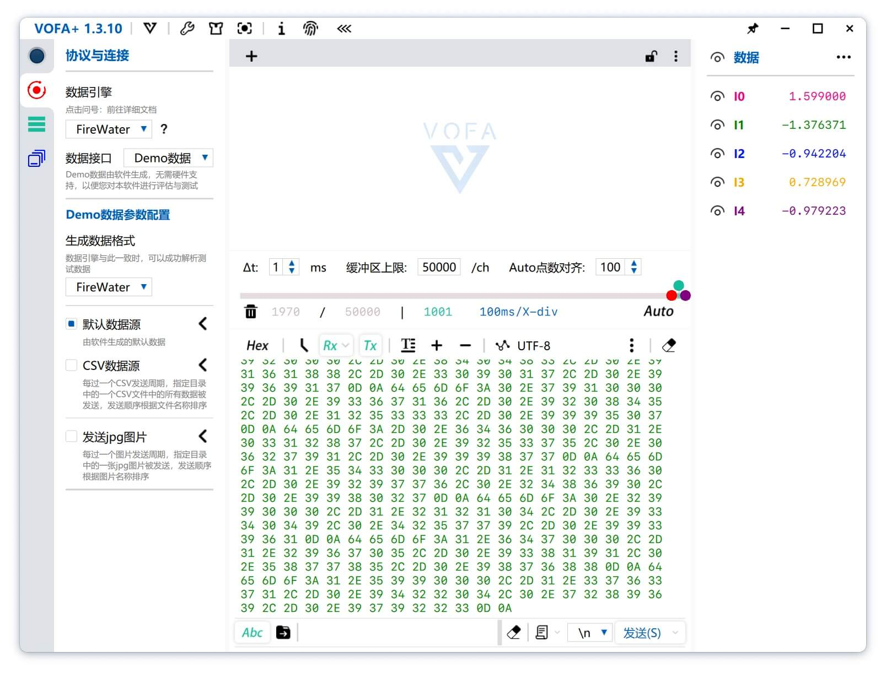

使用简介
成品说明
组装完成的轮足机器人如下图所示：

通过遥控器（如下图所示）控制轮足机器人运动。目前可做运动有：前进/后退，左转/右转，升高/降低腿。

操作步骤
主要用到遥控器的 5 个按键：
- 开关①（位于遥控器的左上）
- 开关②（位于遥控器的右上）
- 摇杆③（位于遥控器的左中）
- 摇杆④（位于遥控器的右中）
- 电源⑤（位于遥控器的中央）

以下是简要的使用流程。
一、先打开遥控器
1.1 确保 [开关①] 打在 [上]。该开关可以拨在[上][中][下]共3个位置。
1.2 确保 [开关②] 打在 [中]。该开关可以拨在[上][中][下]共3个位置。
1.3 确保 [摇杆③] 打在 [最下]。该摇杆可上下左右拨动。上下拨动，松手后不会回中；左右拨动，松手后自动回中。
1.4 [摇杆④] 在中间。该摇杆可上下左右拨动，松手后自动回中。
1.5 长按 [电源⑤] 数秒，听到2声蜂鸣即表示打开了。
二、然后给轮足机器人上电
2.1 用单手端着轮足机器人的品字型白框，品字型上面口朝外，下面2个口朝向身体。大致端水平，在空中不着地。
2.2 另一只手打开轮足机器人的电源开关，即按下开关到[1]的位置。
2.3 然后等待轮足机器人完成启动，约需要等待 10 秒。轮足机器人启动完成时，2个腿会缩起来，并且2个轮子会开始飞快转动。
三、控制轮足机器人运动
3.1 将2个腿缩起的、2个轮子飞快转动的轮足机器人，放到开阔的地面等上，2个轮子着地。
3.2 轮足机器人能“站”在地面上，并缓慢的往前往后反复运动（为了保持能“站”在地面？！）
3.3 [摇杆③] 向上慢慢打，轮足机器人能慢慢站直（可以过小障碍？！）；向下慢慢打，轮足机器人能慢慢蹲下。
3.4 [摇杆④] 上下左右慢慢打，可控制轮足机器人前后左右运动。以轮足机器人的品字型白框为基准，轮足机器人能向前（摇杆向[上]）、向后（摇杆向[下]）、左转（摇杆向[左]）、右转（摇杆向[右]）。
其他
轮足机器人电量不足时，需要充电。充电一小时，即可。没有指示灯等表示充电完成。
组装调试
组装部件
有一堆3D打印件、螺丝、舵机、电机、轮子、品字型白框等，用于组装。如下图所示：
4个舵机装入品字型白框，如下图所示：
3块电路板，如下图所示：
上：舵机控制板。接舵机和遥控器接收器。
中：主控板。接电机（在大腿底部和轮子相连处）。
下：电源板。
基本完成，如下图所示：
基本完成待烧录程序和调试，如下图所示：
烧录调试
VSCode 安装插件后即可直接烧录程序到轮足机器人的电路板。主要步骤如下：
1、VSCode 安装 PlatformIO IDE 插件。
2、轮足机器人的电路板，通过 USB线，和电脑相连。
3、在 VSCode 中打开要烧录程序的文件夹。
4、按操作文档对程序做必要的修改（比如，在某个文件中输入正确的注册码，等），然后点击VSCode安装 PlatformIO IDE插件后在界面底部新增的 [烧录] 按钮，即可完成烧录。
关于 PlatformIO，可以访问官网 https://platformio.org/🔗
获取更多信息。也可以阅读以下文章做初步了解：
- vscode +
PlatformIO嵌入式芯片开发环境搭建🔗
- 使用下一代的嵌入式IDE-PlatformIO 教程🔗
烧录程序后，还使用 VOFA+ （https://www.vofa.plus/🔗）测试和调优，轮足机器人通过 USB
串口和电脑相连。比如：轮子是否被识别到，轮子转动是否丝滑，让4个舵机转动微小角度确保腿部的大腿和品字型白框垂直，等等。

相关源码
有3个源代码，如下：
点击下载 BLDC_Control-241105.zip（主控板源代码）
主控板相关源代码
点击下载 bipedal-241105.zip（舵机板源代码）
舵机板相关源代码
点击下载
bipedal_calibrate-241105.zip（舵机板校准源代码）
轮足机器人的大腿，是和舵机漏出的齿轮相连的。要求大腿部件，和品字型白框基本垂直。大腿部件上的齿轮和舵机漏出的齿轮（非运动状态时是锁定的）相连，初始状态不一定能保证大腿垂直。该校准程序用于让舵机转动很小的角度，以便让大腿垂直。4个舵机转动的角度记录下来，然后填入
bipedal-241105.zip 中的相关文件中，并烧录到舵机板。
相关文档可参考： 点击下载《轮足校准先看.pdf》